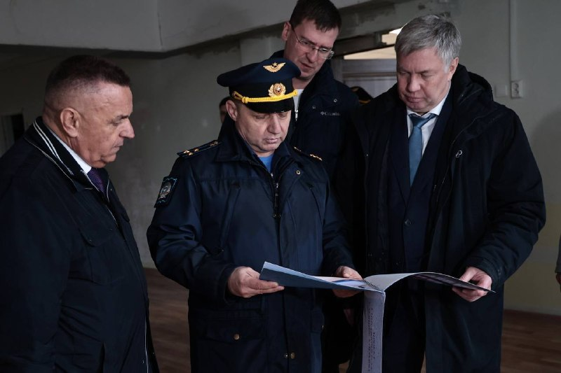

01
Общество и городская среда · событие дня
❗️ В Ульяновском авиационном училище обсудили ремонт площадей под учебно-тренажёрный комплекс Укрепление матер…
Также есть планы по дальнейшему развитию спортивной инфраструктуры для курсантов — регион окажет содействие.…